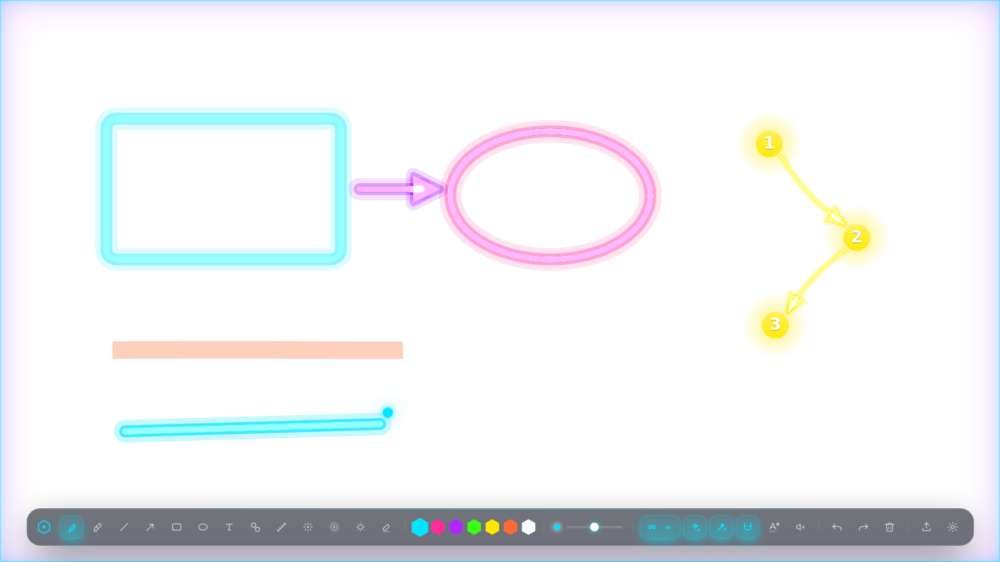
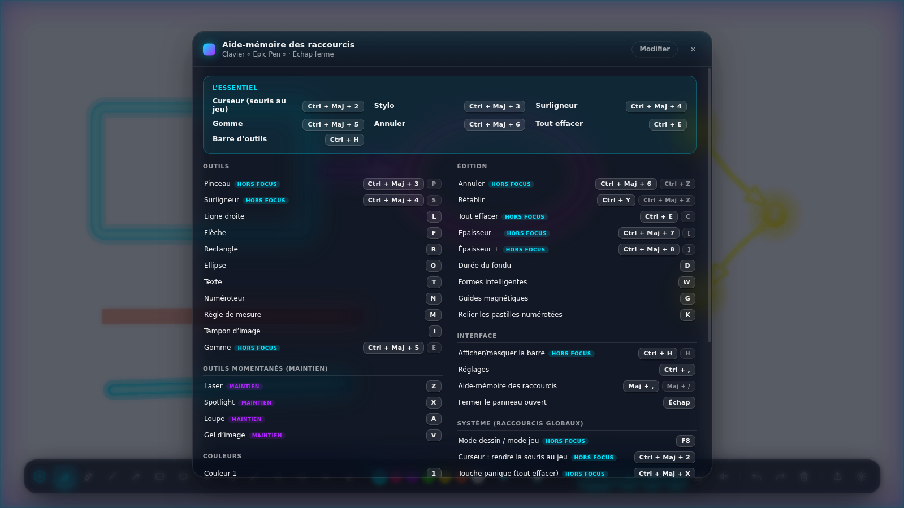
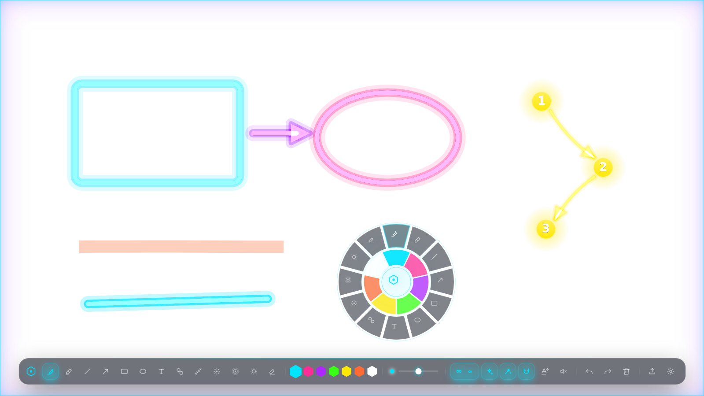
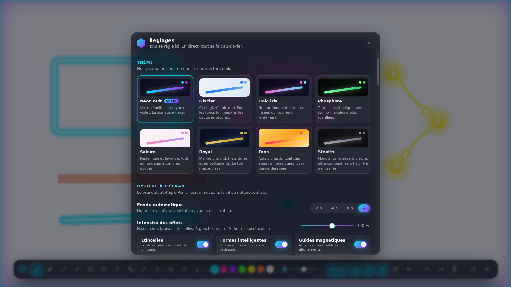

Un trait qui a de la gueule
Le trait est lissé, s'épaissit quand tu accélères, et brille d'un halo néon. Rien à voir avec le trait plat d'Epic Pen.
Tu appuies sur une touche, tu dessines par-dessus ton jeu, c'est magnifique, ça s'efface tout seul, et ton jeu ne perd pas une image par seconde.
Gratuit · Windows 10 et 11 · Fonctionne hors ligne · Aucun compte, aucune publicité

Onze outils, un menu qui s'ouvre sous ton curseur, et un écran qui se nettoie tout seul. Rien à configurer avant de commencer.
Le trait est lissé, s'épaissit quand tu accélères, et brille d'un halo néon. Rien à voir avec le trait plat d'Epic Pen.
Dessine un rectangle de travers : Hexa le redresse tout seul. Tu préférais ton tracé ? Un Ctrl+Z te le rend.
Clic droit maintenu : une roue s'ouvre sous ton curseur. Tu glisses vers l'outil, tu relâches. Sans quitter l'action des yeux.
Par défaut tout s'efface après 4 secondes. Appuie sur D jusqu'à ∞ et ton écran devient un tableau : ça reste jusqu'au nettoyage.
Griffonne un mot au stylo : une demi-seconde plus tard, Hexa le retrace en typographie nette et lisible.
Une couche dédiée pour ton stream : tes spectateurs voient tes annotations, et ton écran à toi peut rester totalement propre.
Hexa reprend les raccourcis d'Epic Pen pour que tes doigts n'aient rien à réapprendre. Tout le reste a été refait.
| Epic Pen | Hexa | |
|---|---|---|
| L'écran finit sale | Tu effaces à la main | Il se nettoie tout seul — 2 s, 4 s, 8 s, ou ∞ si tu veux un tableau |
| La qualité du trait | Un trait plat, façon Paint | Trait lissé qui s'épaissit avec la vitesse, halo néon en trois passes |
| Les formes | Tu vises, et tu trembles | Formes intelligentes : ton rectangle bancal se redresse, et Ctrl+Z rend le tracé d'origine |
| L'écriture | Ton gribouillis reste un gribouillis | Retranscrit en typographie nette, automatiquement |
| Changer d'outil | Viser la barre d'outils | Menu radial sous le curseur : clic droit, tu glisses, tu relâches |
| Corriger | Effacer et recommencer | Clic droit sur une annotation et tu la déplaces |
| Le style | Une barre grise | 8 thèmes complets, du néon au terminal vert, du pastel au quasi-invisible |
| OBS | Ce que voit ton écran | Une couche dédiée : tes spectateurs voient tout, ton écran reste propre |
| Après coup | Rien | Rejeu horodaté de la session, export PNG transparent jusqu'en 4× |
| Le coût pour ton jeu | Une couche composée en permanence | La fenêtre se cache dès qu'elle est vide : rien n'est dessiné, rien n'est calculé |
| Le prix | Payant pour la version complète | Gratuit, et sans aucune connexion |
Ils sont actifs dès le premier lancement, et ils marchent même quand ton jeu est au premier plan. Tous remplaçables, si tu préfères tes propres touches.

Pendant une partie, tu n'as pas le temps de chercher une barre d'outils des yeux. Alors l'outil vient à toi : clic droit maintenu, la roue s'ouvre exactement là où est déjà ta souris.

Ce ne sont pas des changements de couleur : la barre change de forme, d'ombre et d'animation. Ton overlay ne ressemble pas à celui des autres.

Pas de compte à créer, rien d'autre à installer avant. Trois clics et c'est réglé.
Ouvre la page de téléchargement et prends le fichier Hexa-Installateur-….exe.
Windows affiche un écran bleu parce que le programme n'est pas signé. Clique sur « Informations complémentaires », puis sur « Exécuter quand même ».
Un liseré lumineux s'allume autour de ton écran : tu dessines. Réappuie sur F8 et la souris repart dans ton jeu.
L'écran bleu de Windows, c'est normal. Il apparaît pour tous les logiciels gratuits qui n'ont pas payé de certificat de signature à Microsoft. Le guide d'installation détaille chaque clic, avec les mots exacts à chercher à l'écran.
Hexa se télécharge, s'installe, et se fait oublier jusqu'à ce que tu appuies sur F8. Il ne se connecte à rien et ne demande rien.